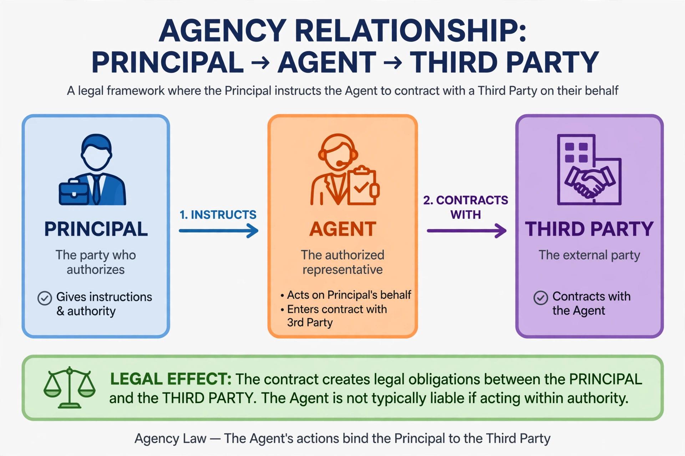

Agency (law)
From Wikipedia, the free encyclopedia

Diagram of the principal–agent relationshipAgency is a field of commercial law and a form of legal relationship in which an agent, a person or entity accountable to another, is authorised by a principal to act on the principal's behalf, for example in contracting with third parties. A principal who delegates authority to an agent stands legally in the agent's shoes for the acts performed.
Legal foundations
In common law systems, agency law is largely judge-made, codified in works such as the American Restatement of Agency. Civil law systems generally recognise agency through the doctrine of direct representation (mandate).
Creation of agency
- Express authority — explicitly granted by the principal
- Implied authority — incidental to express authority
- Apparent (ostensible) authority — when the principal's words or conduct reasonably lead a third party to believe the agent is authorised
- Agency by estoppel and agency by necessity
Duties
Agents owe their principals fiduciary duties — loyalty, obedience, disclosure, confidentiality and accounting — while principals owe duties of compensation, indemnification and reimbursement.
Liability
A disclosed principal is generally bound by, and liable for, the acts of an agent acting within authority. An undisclosed principal may also be bound in many jurisdictions. Principals may be liable for agents' torts under the doctrine of respondeat superior.
Termination
Agency terminates by agreement, lapse of time, completion of purpose, revocation, renunciation, or operation of law (e.g. death or insolvency of a party).